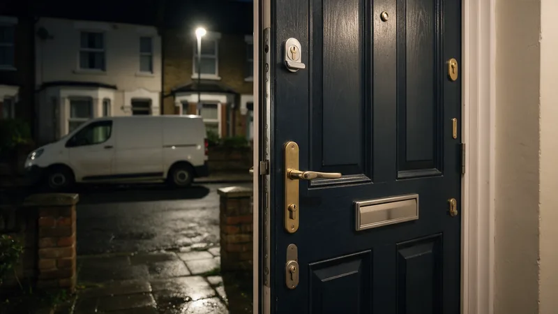

Urgent help
Try the back door. Then ring.
Three things send people looking for a locksmith at the worst moment: a door pulled shut with the keys inside, keys that have gone, and a break in. Each of them has a first move, and in two of the three it is not ringing us.
A demo number from the range Ofcom keeps for television and film. It rings nobody. The urgent line on this demo is a sample Sample and no response time is promised anywhere on this site.
First ten minutes
Do this before anybody arrives.
Do
- Try every other way in. Back door, side door, patio doors, the garage, the gate. More lockouts than you would believe end here.
- Ring whoever else holds a key: partner, parent, neighbour, landlord, the agent. A spare ten minutes away beats any locksmith.
- If a child, an animal or a hob left on is shut in the house, say that the second you ring. If a child is at risk, ring 999 first.
- Find somewhere warm and dry to wait, and keep your phone where you can hear it.
- Have something ready that shows it is your house. Post with your name on it, a bill on your phone, a licence, or a neighbour who knows you.
Do not
- Do not put your shoulder to it, and do not let anybody do it for you. A forced door and a split frame cost more than any lock on it.
- Do not break a window to get in. It is dearer than the visit, and it leaves you with a hole to make safe tonight as well.
- Do not keep forcing a handle that has gone slack. If the mechanism is going, working it is how it ends up locked shut.
- Do not try to turn a snapped key with pliers. Pushing the stub in is what turns a short job into a new cylinder.
- Do not tidy up or repair anything after a break in until the police have been and you have taken photographs.
Three common ones
What it probably is.
Locked out
Door pulled shut, keys the other side of it. Try every other door and gate, then ring anybody else with a key. If neither works, ring us and tell us what sort of door it is: white uPVC, a timber door with a key, or a composite. It decides what we bring.
Lost or stolen keys
Lost is one job, taken is another. If they are only lost, we get you in and cut you new ones. If they were stolen, or lost with anything showing your address, somebody has a working key to your front door and the right answer is new cylinders, not new copies.
Break in
Police first: 101 to report it, 999 if you think somebody is still there. Stay out until they say otherwise. Photograph everything before it is touched. Then ring us, and the first visit is about making the house secure for tonight rather than a tidy repair.

Generated photoGenerated for this demo. Not a photograph of a real job.
Why we ask first
Whose house is it?
Every locksmith worth ringing will ask you to show, in some reasonable way, that the house is yours. Post with your name on it, a bill on your phone, a driving licence, a landlord or an agent who will confirm it, or a neighbour who knows you.
It is not us being difficult and it is not a hoop for the sake of it. It is the one thing that stops this trade being used by the wrong people, and anybody who does not ask is somebody you should wonder about.
If you genuinely have nothing on you, say so when you ring rather than when we are stood on the step, and we can work out between us what would do.
Also worth knowing
Two things that are not ours.
If somebody may still be in the house
Do not go in to check. Get away from the house, ring 999, and wait somewhere you can see the front door from a distance. A locksmith is no use to you in that ten minutes and we would tell you the same thing on the phone.
The same goes for a child or an animal in real distress, or anything burning. Ring 999 first. We can come after.
If it is a rented house
Ring the landlord or the managing agent before you ring a locksmith, because in most tenancies they arrange and pay for it, and some have somebody they use. Changing a lock on a rented door without telling them can cause you a different sort of problem.
If nobody answers and you are shut out at night, say that when you ring us. Getting you in is one thing. Changing the lock is a conversation with whoever owns the door.
Questions
In the middle of it.
I am locked out with a baby in the house. What do I do?
Ring 999 first, not a locksmith. The fire service will get a child out of a house and they will not charge you for it, and that is the right call rather than waiting for anybody with a tool roll.
Tell us as well if you have already rung us, so we are not the thing you are waiting on. The same goes for an animal in real distress or a hob left on under something.
Can you get me in without damaging the door?
Most of the time, yes, and that is always what we try first. Where it is not possible, the cylinder is what gets sacrificed rather than the door or the frame, and it gets replaced on the spot.
Whatever is about to happen, you hear it first. Somebody arriving and going straight for the door with a drill without a word is not how this should go.
My keys were stolen with my bag. Is getting in enough?
No. Getting in is the easy half. If somebody has your keys and any idea where you live, the locks need changing, not copying.
Say it on the phone so we bring cylinders with us rather than having to come back. And if your bag had a wallet in it, the bank calls matter as much as the lock.
It is a rented flat and the agent is shut. What now?
We can get you in, and that part is normally fine. Changing anything is different, because it is not your door, and most tenancy agreements say so.
So the sensible thing on a night like that is: in tonight, agent in the morning. Tell us it is rented when you ring and we will not start a job that lands you in bother.
Need somebody out?
Tell us what the door is doing and your postcode and we will book someone in. If you are stood outside it now, ring the urgent line instead of filling in a form.